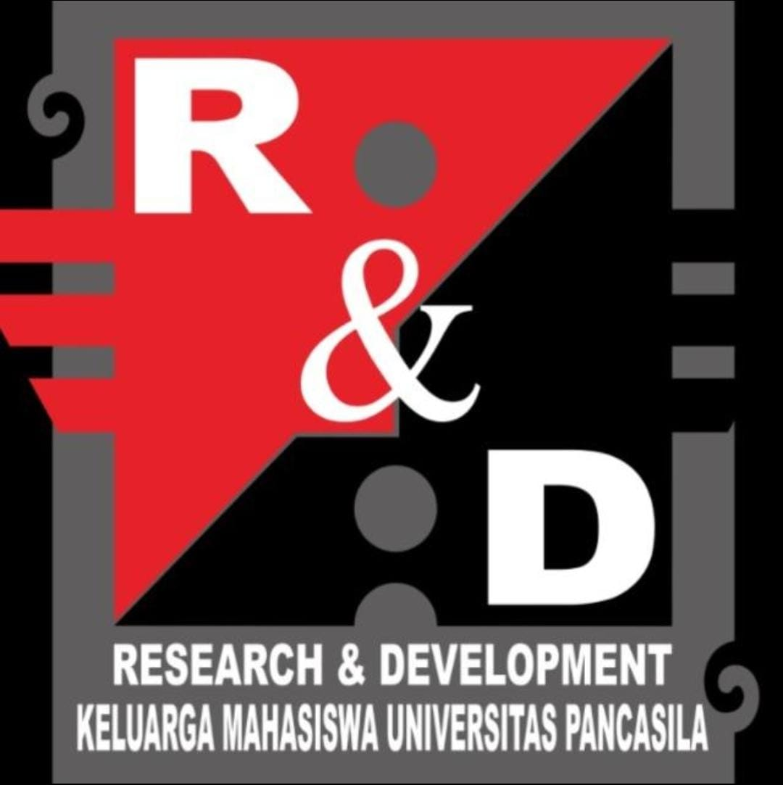
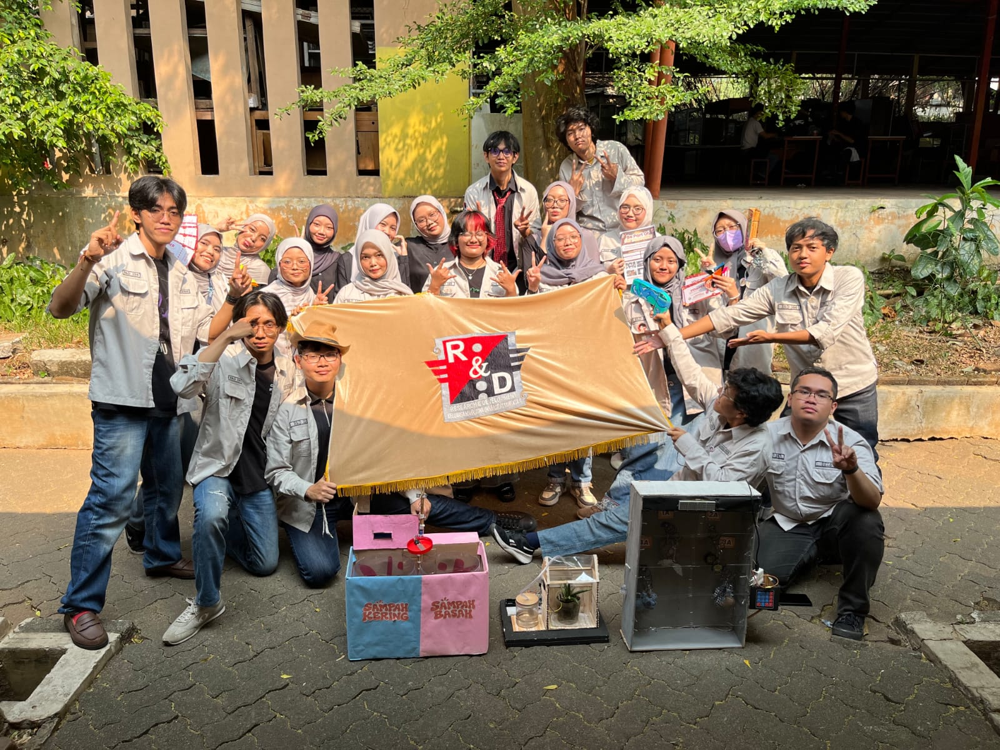

Universitas Pancasila

UKM Research & Development Universitas Pancasila merupakan organisasi mahasiswa yang menjadi wadah bagi mahasiswa untuk mengembangkan kemampuan dalam bidang penelitian, pengembangan, inovasi, dan kegiatan berbasis teknologi.
UKM ini dapat menjadi tempat bagi mahasiswa untuk belajar, berdiskusi, bekerja sama, serta mengembangkan ide dan proyek yang dapat memberikan manfaat bagi lingkungan kampus.

Informasi mengenai Universitas Pancasila dapat dilihat melalui website Universitas Pancasila .
Untuk menghubungi UKM Research & Development, kirim email kepada UKM .